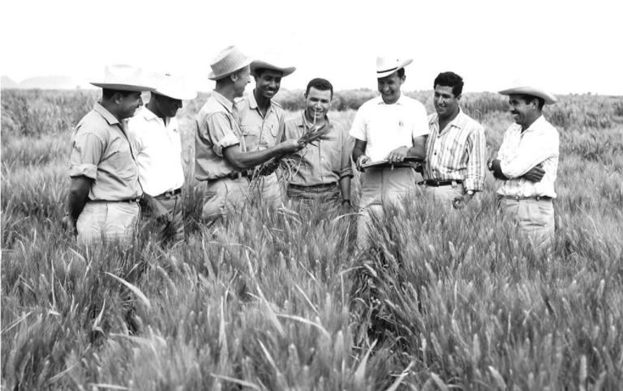

DrNorman Borlaug
The man who saved billion lives

Dr.Norman Borlaug, third from the left, trains biologists in lexico on how to increase wheat yields - part of
his life-long war on hunger
Here's a time of Dr. Borlaug's life:
- 1914 - Born in cresco, Iowa
- 1933 - Leaves his family's farm to attend the University of Minnesota, thanks
to a Depression era program know as the "National Youth Administration
- 1935 - Has to stop school and save up more money. Works in the Civilian
Conservation Corps, helping starving Americans. "I saw how food changed them", he said. "All of this
left scars on me."
- 1937 - Finishes university and takes a job in the US Forestry Service
- 1938 - Marries wife of 69 years Margret Gibson. Gets laid off due to budget
cuts. Inspired by Elvin Charles Stakman, he returns to school study under Stakman, who teaches him about
breeding pest-resistent plants.
- 1941 - Tries to ebroll in the military after the Pearl Harbor attack, but is
rejected. Instead, the military asked his lab to work on waterproof glue, DDT to control malaria,
disinfectants, and other applied science.
- 1942 - Receives a Ph.D in Genetics and Plant Pathology
- 1944 - Rejects a 100% salary increase from Dupont, leaves behind his pregnant
wife, and flies to Mexico head a new plant pathology program. Over the next 16 years, his team breeds
6,000 different strains of disease resistent wheat - including different varieties for each climate on
Earth.
- 1945 - Discovers a way to grown wheat twice each season, doubling wheat yields
- 1953 - crosses a short, sturdy dwarf breed of wheat with high-yielding
American bredd, creating a strain that responds well to fertilizer, It goes on to provide 95% of
Mexico's wheat.
- 1962 - Visits Delhi and brings his high-yielding strains of wheat to the
Indian subcontinent in time to help mitigate mass starvation due to a rapidly expanding population
- 1970 - Receive the Nobel Of Piece Prize
- 1983 - Helps seven African countries dramatically increase their maize and
sorghum yields
- 1984 - Become a distinguished professor at Texas A&M University
- 2005 - States "we will have to double the world food suply by 2050." Argues
that geneticaly modified crop are the only way we can meet the demande, as we run out of aravle land.
Says that the GM crios are not inherently dangerous because "we've been geneticaly modifying plants and
animals for a long time. Long before we called it science, people were selecting the best breeds."
- 2009 - Dies at the age of 95.
"Borlaug's life and achievement are testimony to the far-reaching contribution that one man's
towering intellect, persistence and scientific vision can make to hoamn peace and progress.
-- Indian Prime Minister Manmohan Singh
If you have time, you should read more about this incredible human being on his Wipedia entry.